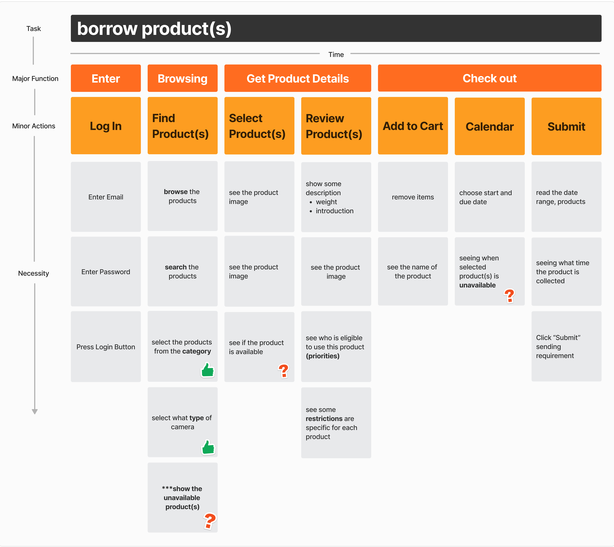

Ideation
In the ideation phase of my project, I used the user
story mapping method to explore the user's journey in
detail. By breaking down the user's interactions step
by step, I was able to identify key needs, pain
points, and opportunities for improvement. This
process allowed me to generate concepts that
directly address the user's core challenges,
ensuring that the final design is not only
functional but deeply aligned with their
expectations and goals.
User Story Map
The user story map, which aligns user needs with product features, was used in order to deliver the most valuable features first.
The initial task of the students, who are the users, is to borrow some equipment from the inventory room, which is the backbone of the user story map. Then, the major functions were broken into minor actions to complete the initial task on the map.
- It is important to consider how to display availability status of the products.
- When and how to show the availability what if the users want to borrow more than one product?
